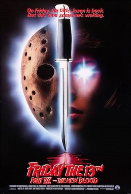

| Friday the 13th Part VII: The New Blood | |
|---|---|
|  | |
| Film | Friday the 13th Part VII: The New Blood |
| source cerita: | wikipedia |
| Tanggal rilis | 13 Mei 1988 |
| Bahasa | Bahasa Inggris |
| Durasi | 88 menit |
Setelah menyaksikan ayahnya yang pecandu alkohol menyiksa ibunya secara fisik, Tina Shepard muda mencoba melarikan diri dari kekacauan di rumah dan pergi ke Crystal Lake dengan perahu. Ketika ayahnya mengikutinya untuk menghentikannya, kemampuan telekinetik Tina yang tidak aktif muncul, dan dia secara tidak sengaja menghancurkan dermaga tempat ayahnya berdiri, menyebabkan ayahnya jatuh ke danau dan tenggelam.
Bertahun-tahun kemudian, seorang remaja Tina masih berjuang dengan penyesalan seputar kematian ayahnya. Ibunya, Amanda, membawanya ke kediaman tepi danau yang sama sebagai bagian dari perawatannya dari psikiaternya, Dr. Crews. Dia memulai serangkaian eksperimen (serangan verbal) yang dirancang untuk mengagitasi kondisi mental Tina, memaksa kekuatannya menjadi lebih jelas. Pada kenyataannya, dia hanya mencoba untuk mengeksploitasi kekuatan psikisnya. Setelah sesi yang sangat menjengkelkan dengan Dr. Crews, Tina berlari dari kabin dan ke dermaga sambil memikirkan kematian ayahnya. Sambil memikirkannya, dia berharap dia akan kembali. Kekuatannya tanpa disadari membangunkan pembunuh massal Jason Voorhees , yang dirantai di dasar Crystal Lake pada akhir Bagian 6 , dan dia muncul dari air untuk melakukan pembunuhan massal lainnya.
Di sebelah kediaman Shepard, ada sekelompok remaja yang sedang mengadakan pesta ulang tahun untuk teman mereka, Michael. Kelompok itu terdiri dari sepupu Michael, Nick, Russell yang sok tahu dan pacarnya Sandra, Ben dan pacarnya Kate, penulis fiksi ilmiah Eddie, David yang doyan ganja, Robin yang periang, Maddy yang pemalu, dan sosialita sombong Melissa. Nick, yang datang hanya untuk pesta, menjadi tertarik pada Tina, yang membuat Melissa kesal. Melissa mencoba memisahkan Nick dan Tina, bahkan mencium Eddie untuk membuat Nick cemburu, tetapi rencananya tidak berhasil - selain membuat Eddie merasa ditolak setelahnya. Tina memberi tahu Nick tentang Jason dan mendapat penglihatan tentang dia yang membunuh Michael. Sementara itu, Jason membunuh Michael dan pacarnya Jane, kemudian membunuh pasangan lain yang berkemah di hutan juga.
Ketika Tina pergi bersama Nick untuk mencari ibunya, Jason membunuh remaja lainnya satu per satu. Russell dan Sandra pergi ke danau untuk berenang. Ketika Sandra berenang tanpa busana, Russell terbunuh dengan kapak di wajahnya. Sandra menemukan jasadnya sebelum dia ditarik ke dalam air dan tenggelam. Maddy mencari David tetapi menemukan jasad Russell. Dia berlari mencari bantuan, tetapi Jason menyerangnya di gudang terdekat dan membunuhnya dengan sabit. Jason kemudian membunuh Ben dengan menghancurkan tengkoraknya dan kemudian Kate dengan menusukkan terompet pesta ke matanya. Di dalam rumah, Jason menusuk David dan mengiris leher Eddie. Di lantai atas, Robin menemukan kepala David yang terpenggal dan terlempar keluar melalui jendela hingga tewas. Ketika Jason menyerang Dr. Crews, dia menyelamatkan diri dengan menggunakan Amanda sebagai perisai manusia , tetapi Jason akhirnya membunuhnya dengan gergaji mesin. Tina menemukan jasad ibunya tak lama kemudian dan menggunakan kekuatannya untuk menyetrum Jason dan menghancurkan sebagian rumah hingga menimpanya. Ketika Nick dan Tina mencoba memberi tahu Melissa apa yang terjadi, Melissa berpikir mereka gila dan mencoba pergi, tetapi Jason membunuhnya dengan kapak di wajah.
Nick mencoba melawan Jason, tetapi ia segera ditundukkan. Tina melepaskan kekuatannya, memecahkan topeng Jason dan memperlihatkan wajahnya yang rusak dan membusuk. Saat pertempuran berkecamuk, kabin tepi danau Shepard hancur oleh api yang meledak dan serangan berlanjut di dermaga. Meskipun Tina tidak dapat membunuh Jason, ia tanpa sadar memanggil roh ayahnya, yang bangkit dari danau dan menyeret Jason kembali bersamanya ke kedalaman Crystal Lake, merantai pembunuh berantai itu sekali lagi.
Keesokan paginya, Tina dan Nick dibawa pergi dengan ambulans. Seseorang menemukan topeng Jason yang rusak di antara reruntuhan, dan layar memudar menjadi hitam saat bisikan Jason terdengar di kejauhan.